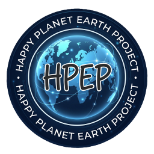
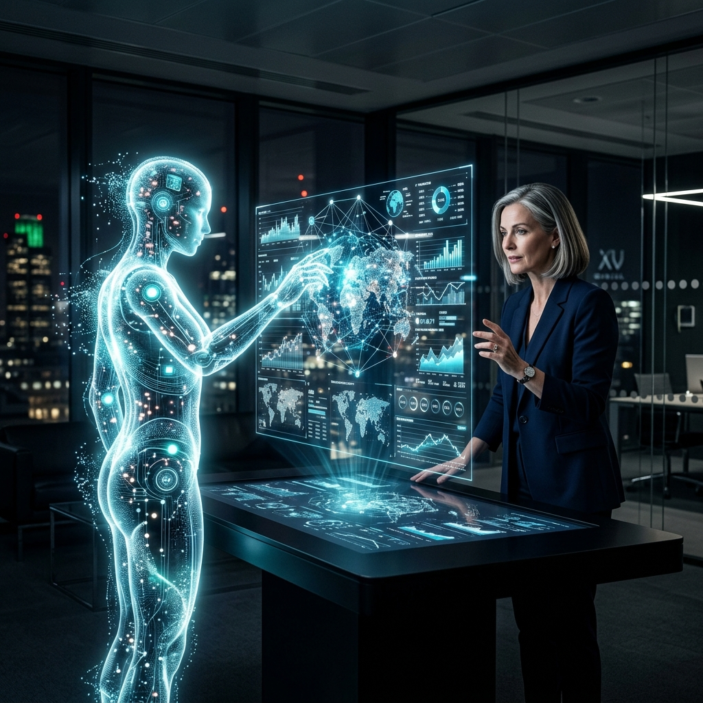
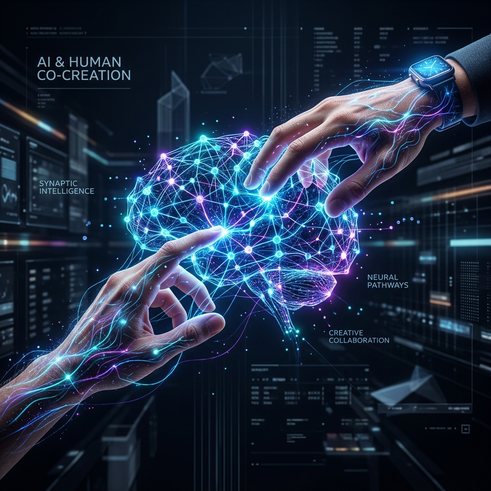
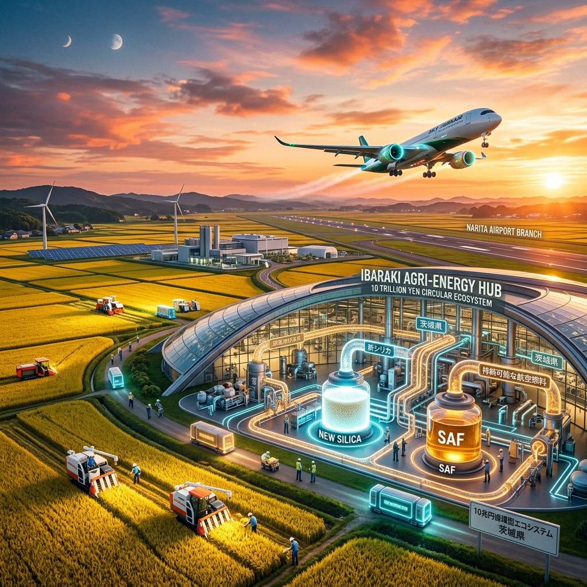

Human Reskilling
単なるツールの習得ではなく、AIを活用して人間の創造性を高める「ヒューマンリスキリング」を提唱します。
左腕AI (CXO AI)
経営者に客観的な視点を提供し、1人で10人分の価値を生み出す「10人力」の次世代経営者を育成します。

単なるツールの習得ではなく、AIを活用して人間の創造性を高める「ヒューマンリスキリング」を提唱します。
経営者に客観的な視点を提供し、1人で10人分の価値を生み出す「10人力」の次世代経営者を育成します。

これからの時代に必要なのは、自ら問いを立てる「探究心」と「非認知能力（EQ）」です。
教育現場やビジネスシーンにおいて、これまで測れなかった能力の変容を可視化するプログラムを提供します。
非認知能力検定協会と連携し、成長をデータで捉えます。


「茨城を独立国家にするには？」というワクワクする問いから、10兆円規模の実業が動き出しています。
籾殻から抽出する「ニューシリカ」を起点に、農業、環境浄化、そして次世代航空燃料（SAF）へと繋がる循環モデルを構築します。
月1回の「未来創造会議（アイデア競争場）」を開催。メンバーのスキルとリソースを3Dマッチングさせ、自律的にプロジェクトが生まれるDAO（自律分散型組織）を目指します。
既存の枠組みを超え、日本から世界へ「知恵」のアウトバウンドを生み出します。
ツールの活用により、プロジェクトの加速と自律的な組織運営を支えます。